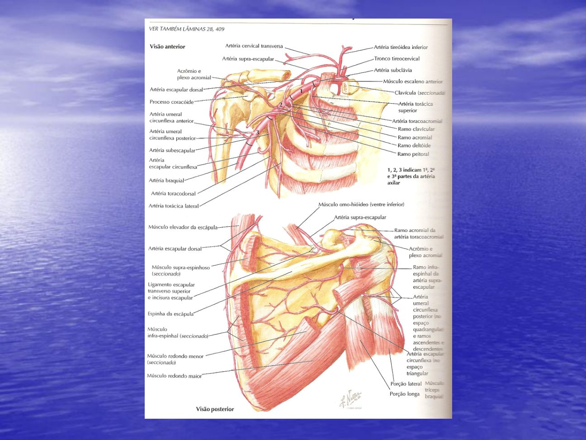
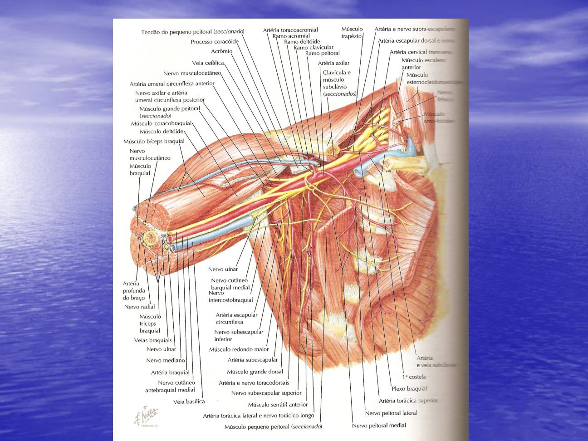
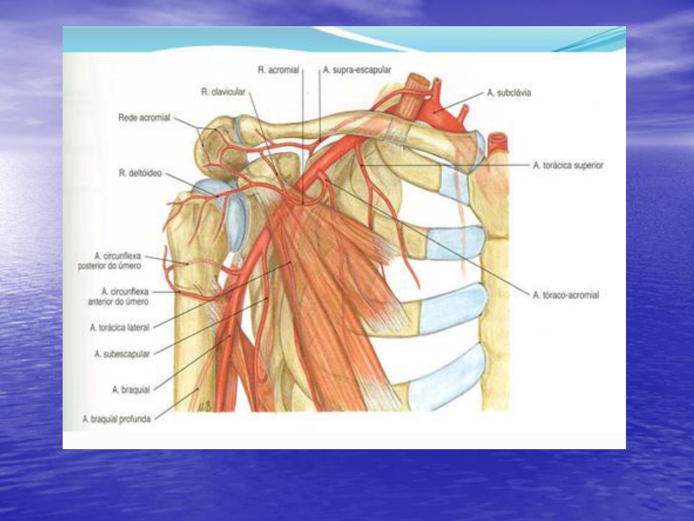
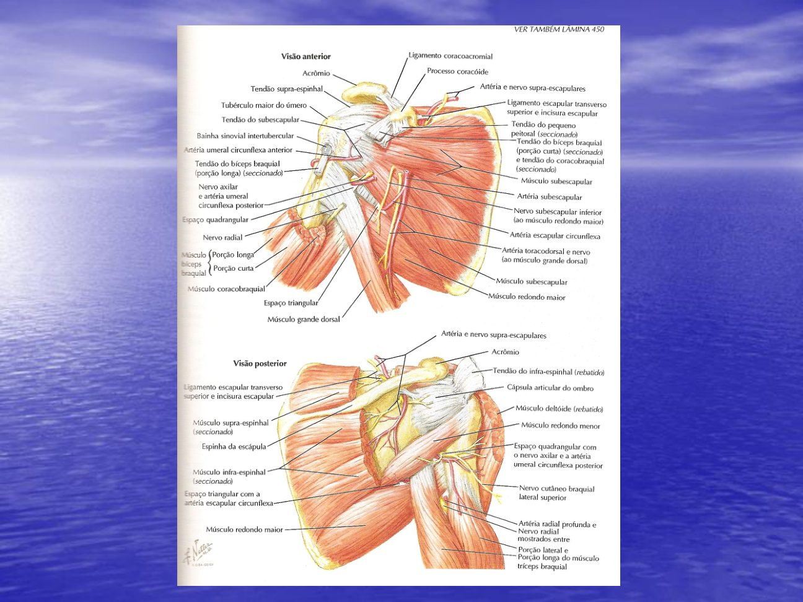
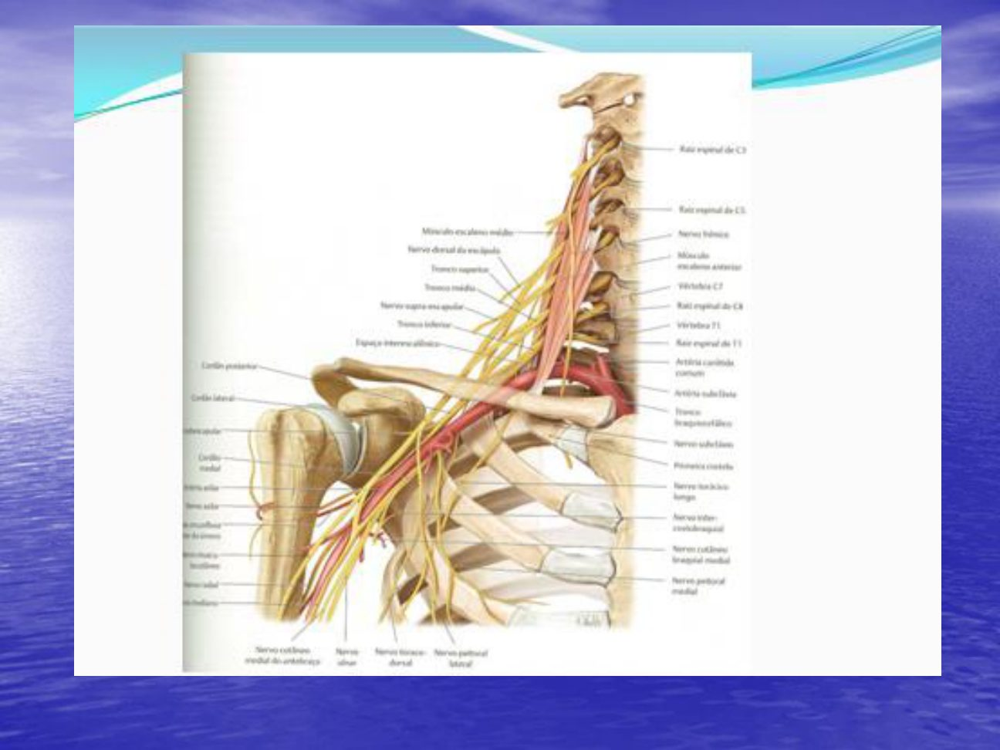

Córtex Estudos · 4º Semestre · Anatomia Topográfica · Aulas de 18/09
Região Axilar e Desfiladeiro Cervicotorácico
A artéria axilar dividida em três partes pelo peitoral menor — com a sintopia exata dos fascículos em cada parte e a regra 1-2-3 dos ramos —, os espaços quadrangular e triangular de Velpeau, a circulação colateral do ombro; e o desfiladeiro cervicotorácico com seus três pontos de compressão (trígono interescalênico, espaço costoclavicular e retropeitoral), a costela cervical, a síndrome de Paget-Schroetter, as manobras diagnósticas — fechando com a pincelada do professor sobre os nervos frênico e vago.
1 · A artéria axilar em três PARTES
- 🎯 Vocabulário da aula: artéria não tem "porção" — artéria se divide em PARTES (primeira parte da axilar, primeira parte da subclávia, parte descendente da aorta).
- A ARTÉRIA AXILAR (da primeira costela à margem do redondo maior) é dividida em TRÊS PARTES pelo músculo PEITORAL MENOR:
As três partes — a referência é sempre o peitoral menor
- 1PRIMEIRA PARTE — MEDIAL ao peitoral menor.
- 2SEGUNDA PARTE — POSTERIOR ao peitoral menor (atrás dele).
- 3TERCEIRA PARTE — LATERAL ao peitoral menor.

2 · Sintopia com o plexo, parte por parte
| Parte | Relação com o plexo braquial |
|---|---|
| 1ª parte | fascículos LATERAL e POSTERIOR passam LATERAIS à artéria · 🎯 o fascículo MEDIAL passa POSTERIOR à artéria · a veia axilar faz a sintopia medial |
| 2ª parte | 🎯 correspondência EXATA dos nomes: fascículo lateral é LATERAL, o medial é MEDIAL e o posterior é POSTERIOR à artéria |
| 3ª parte | já são os RAMOS: MUSCULOCUTÂNEO lateral · ULNAR medial (entre a artéria e a veia) · RADIAL e AXILAR posteriores · as raízes do MEDIANO anteriores — o mediano se forma lateralmente e CRUZA a artéria, anterior, de lateral para medial |
- É a sintopia que explica a gravidade do trauma local: lesões dessa região podem pegar artéria, veia e nervos de uma vez.

3 · O caso do desfiladeiro traumático
🩺 O atropelado de 23 anos
Fratura de clavícula com lesão de artéria axilar + veia axilar + plexo braquial — "a síndrome do desfiladeiro mais traumática". Chegou 14 horas depois, sangrando, com um curativo tentando tamponar lesão arterial profunda ("tira o curativo e jorrava na parede — absurdo"). Sobreviveu porque tinha 23 anos; o membro ficou disfuncional (plexo lesado), mas perfundido pela circulação colateral.
- 🎯 Lição de conduta: é melhor um membro disfuncional do que desarticular — a desarticulação na cintura escapular é um procedimento gravíssimo. E lesão vascular dessa região não se tampona com curativo: precisa de abordagem cirúrgica imediata.
4 · Subclávia: broto embrionário e as suas três partes
- 🎯 A artéria SUBCLÁVIA é o broto embrionário de formação do MEMBRO SUPERIOR — como a artéria ISQUIÁTICA é o broto do membro inferior.
- A subclávia também se divide em três partes — o divisor aqui é o músculo ESCALENO ANTERIOR: 1ª parte MEDIAL, 2ª POSTERIOR e 3ª LATERAL ao músculo.
- Os escalenos anterior e médio vêm das vértebras cervicais e se inserem na PRIMEIRA COSTELA — guarde essa inserção: ela monta o trígono interescalênico do desfiladeiro (tópico 14).
5 · A regra 1-2-3 dos ramos da axilar
🎯 "Fica fácil: da primeira parte, um ramo; da segunda, dois; da terceira, três"
- 11ª PARTE → 1 ramo: TORÁCICA SUPERIOR — (a antiga "torácica suprema") — irriga a musculatura do 1º e 2º espaços intercostais, com ramificação peitoral.
- 22ª PARTE → 2 ramos: TORACOACROMIAL + TORÁCICA LATERAL — detalhadas no tópico 6.
- 33ª PARTE → 3 ramos: SUBESCAPULAR + CIRCUNFLEXA POSTERIOR + CIRCUNFLEXA ANTERIOR DO ÚMERO — detalhadas no tópico 7.
6 · Segunda parte: toracoacromial e torácica lateral
- TRONCO (ou artéria) TORACOACROMIAL — dele saem QUATRO ramos: PEITORAL, DELTÓIDEO, ACROMIAL e CLAVICULAR.
- 🎯 Aviso para a peça: variação é a regra — na maioria das vezes NÃO há um tronco único: um ramo sai à parte, ou dois, ou todos saem diretos da axilar sem formar tronco. "Quem disseca vê a variação."
- TORÁCICA LATERAL — sai rente à borda lateral do peitoral menor → vai ao SERRÁTIL ANTERIOR, ao gradil costal e à MAMA (os ramos mamários laterais — não esquecer o papel dela na irrigação da mama).
7 · Terceira parte: subescapular, toracodorsal e circunflexas
- ARTÉRIA SUBESCAPULAR — origina a CIRCUNFLEXA DA ESCÁPULA (que "faz a volta" para a face posterior da escápula) e a TORACODORSAL.
- A toracodorsal desce acompanhada do nervo e da veia toracodorsais — 🎯 ordem NERVO · ARTÉRIA · VEIA (o nervo lateral, como na femoral) — em direção ao LATÍSSIMO DO DORSO.
- 🎯 Dica de prática: a torácica lateral solta confunde com a toracodorsal — mas a toracodorsal está "presa" no latíssimo do dorso; siga o vaso até o músculo.
- CIRCUNFLEXA POSTERIOR DO ÚMERO — dá a volta atrás do colo do úmero, junto do nervo axilar, passando pelo espaço quadrangular (tópico 11). Normalmente é mais calibrosa que a CIRCUNFLEXA ANTERIOR, que contorna o colo pela frente.
8 · O caso da vovó: colo do úmero e nervo axilar
🩺 Escorregou, caiu, fraturou o colo do úmero
A fratura do colo do úmero pode lesar a circunflexa posterior do úmero (hematoma — geralmente pequeno, o vaso não é calibroso) e, mais importante, o NERVO AXILAR: o ombro fica caído e o braço perde a rotação — mais a rotação do que a elevação, porque outros músculos ajudam a elevar.
⚠️ "O mais potente rotador" — versão da aula × livros
Na aula, a rotação perdida se explica pelo REDONDO MENOR — "o mais potente rotador do membro superior é o redondo". Nos livros, o principal rotador LATERAL do braço é o INFRAESPINAL, com o redondo menor como coadjuvante (ambos inervados de formas diferentes — o redondo menor é do nervo axilar, e é por isso que a rotação sofre na lesão dele). Na prova do professor, responda pela aula.
9 · A veia axilar — e quem se mete entre ela e a artéria
- A VEIA AXILAR é MEDIAL à artéria — mas é CONTÍGUA à artéria SÓ NA PRIMEIRA PARTE.
- 🎯 Na 2ª parte, quem fica entre a artéria e a veia é o FASCÍCULO MEDIAL do plexo; na 3ª parte, é o NERVO ULNAR.
- Aplicação: em criança se disseca muito a veia axilar para flebotomia (cateter para infusão) — cuidado com o ulnar e com o fascículo medial, que estão colados no caminho.
10 · Linfonodos centrais e a circulação colateral do ombro
- Na gordura da axila ficam os linfonodos do grupo CENTRAL — 3 a 5 grandes linfonodos que devem ser palpados, principalmente na mulher, pelos tumores de mama.
- Circulação colateral do ombro: ramos da SUBCLÁVIA (supraescapular, escapular dorsal — a mesma "dorsal da escápula") se anastomosam com ramos da AXILAR (circunflexas, rede acromial) e com a BRAQUIAL PROFUNDA.
- 🎯 Consequência: o membro superior compensa MAIS que o inferior nos processos obstrutivos — tem muita anastomose e massa muscular menor para nutrir. Por isso oclusões abaixo da subclávia costumam ser bem toleradas.
- Aparte do professor (para a Patologia): saber discernir aterosclerose (placa no lúmen) de arteriosclerose (endurecimento da parede) e da doença de Mönckeberg (calcificação da média) — "a doença que mais mata é o infarto".

11 · Espaço QUADRANGULAR de Velpeau (úmero-tricipital)
Quatro limites — visto por trás da escápula
- 1LATERAL — o ÚMERO, na região do colo cirúrgico (sulco intertubercular).
- 2MEDIAL — a CABEÇA LONGA DO TRÍCEPS.
- 3SUPERIOR — o REDONDO MENOR (olhando pela frente aparece o subescapular — mas o limite real é o redondo menor).
- 4INFERIOR — o REDONDO MAIOR.
- 🎯 Conteúdo: NERVO AXILAR + ARTÉRIA CIRCUNFLEXA POSTERIOR DO ÚMERO — é por isso que a fratura do colo do úmero (tópico 8) ameaça exatamente essa dupla.
- Curiosidade da aula: Velpeau é o mesmo da tipoia (fixação de Velpeau) e da palpação da mama.

12 · Espaço TRIANGULAR de Velpeau (omo-tricipital)
Três limites — e a resposta de prova
- 1LATERAL — a CABEÇA LONGA DO TRÍCEPS (a mesma que é limite MEDIAL do quadrangular — não confunda).
- 2INFERIOR — o REDONDO MAIOR.
- 3SUPERIOR — 🎯 a ESCÁPULA — "para a prova: ESCÁPULA" (tirando o redondo menor por trás, ou o subescapular pela frente, o que aparece é a escápula; o nome omo-tricipital vem de omoplata + tríceps).
- Conteúdo: SÓ a ARTÉRIA CIRCUNFLEXA DA ESCÁPULA (ramo da subescapular), contribuindo para a irrigação da face posterior do ombro.
⚠️ Divergência com os livros no limite superior
Os atlas costumam dar o limite superior do espaço triangular como o redondo MENOR. O professor foi explícito: na prova dele, o limite superior é a ESCÁPULA — o argumento é que, removendo o redondo menor (ou o subescapular, pela frente), a estrutura que de fato limita é a escápula. Nos livros, saiba converter.
13 · O desfiladeiro: conceito, clínica e os três espaços
- O DESFILADEIRO CERVICOTORÁCICO é o corredor entre o pescoço/tórax e o membro superior, onde músculos e ossos podem comprimir as estruturas nobres: ARTÉRIA, VEIA e NERVO.
- 🎯 Os TRÊS locais de compressão, de cima para baixo: 1) TRÍGONO INTERESCALÊNICO · 2) ESPAÇO COSTOCLAVICULAR · 3) ESPAÇO RETROPEITORAL (retrocoracopeitoral).
- A clínica típica: "levanto o braço no ônibus e a mão dorme, o braço pesa, perco a força — baixo o braço e melhora". Exame: palpar os pulsos dos DOIS lados e fazer manobras de elevação — a elevação comprime e o pulso diminui ou some.
- Classificação da síndrome pela estrutura comprimida: NEUROGÊNICA ~95% (a imensa maioria) · VENOSA ~2% · ARTERIAL ~1% (a mais rara).
14 · Trígono interescalênico — e por que a veia escapa
- Limites: ESCALENO ANTERIOR (na frente — origem em C4–C6, inserção no tubérculo escaleno da 1ª costela) + ESCALENO MÉDIO (atrás — inserção mais lateral na 1ª costela) + base = PRIMEIRA COSTELA.
- Quem passa DENTRO: a ARTÉRIA SUBCLÁVIA (atrás do escaleno anterior — é ele que a divide em três partes) e o PLEXO BRAQUIAL (atrás da artéria).
- 🎯 A VEIA SUBCLÁVIA passa NA FRENTE do escaleno anterior — portanto a veia NÃO é comprimida no trígono. Compressão venosa acontece mais abaixo, no costoclavicular.
- O mecanismo: inserção do escaleno anterior mais para trás, ou do médio mais para frente, estreita o triângulo → mais compressão. Hipertrofia dos escalenos (musculação do pescoço) também.
- 🎯 Por que o NERVO sofre mais que a artéria? "A artéria é pulsátil — quando pulsa, expande" e escapa da compressão leve; o nervo é parado e comprime fácil. A artéria só sofre com fibrose intensa ou costela cervical.

15 · Costela cervical e as variações musculofasciais
- COSTELA CERVICAL: presente em até 1,5% da população; entre os que têm síndrome do desfiladeiro, ~5% têm costela cervical. Mulheres: mais de 2× a incidência dos homens.
- Origina-se no processo transverso de C7 e vai à primeira costela — completa ou INCOMPLETA (termina em lâmina, fáscia ou banda fibrosa; a fusão pode ser articulação ou fibrose).
- 🎯 Ela passa DENTRO do trígono interescalênico → comprime principalmente nervo, pode comprimir artéria — a veia não (está fora do trígono). 50% dos portadores têm sintomas, a maioria neurológicos.
- SINAL DA TECLA: estrutura endurecida palpável na região supraclavicular. E 🎯 um RX simples mostra a costela cervical — não precisa de tomografia para o diagnóstico.
- Outras variações que apertam o trígono: bandas fibrosas embrionárias atrás do escaleno anterior · fáscia de SIBSON (do escaleno à cúpula pleural, que ela reveste) · músculo ESCALENO MÍNIMO (entre anterior e médio) · 1ª costela anômala (inserção alta ou na 2ª costela) · calo de fratura da 1ª costela.
16 · Espaço costoclavicular: Paget-Schroetter e os acessos centrais
- Limites: na frente, o terço médio/medial da CLAVÍCULA com o músculo SUBCLÁVIO e o ligamento COSTOCLAVICULAR; atrás, a face anterior da PRIMEIRA COSTELA. Nesse estreito passam artéria, veia e ramos do plexo.
- 🎯 É AQUI que a veia é comprimida — a veia tem parede delgada e complacente: "duas estruturas ósseas comprimindo a veia, ela entope". Trombose da subclávia/axilar por compressão no desfiladeiro = SÍNDROME DE PAGET-SCHROETTER.
- Na flebografia dinâmica da aula: braço para baixo, veia normal; braço elevado, a veia pinça no espaço costoclavicular.
🎯 A ordem dos acessos venosos centrais (doutrina da aula)
1º JUGULAR INTERNA DIREITA (o trajeto mais retilíneo com a cava) → 2º jugular interna esquerda (faz curva, caminho mais longo) → 3º femoral direita → 4º femoral esquerda → 5º subclávia direita → 6º subclávia esquerda. A subclávia fica por último justamente pela compressão costoclavicular: com cateter dentro, a chance de trombose é maior. Vale para criança e adulto, clínico e cirúrgico.
17 · Espaço retropeitoral e as compressões raras
- ESPAÇO RETROPEITORAL (retrocoracopeitoral): atrás do PEITORAL MENOR, junto da sua inserção no processo CORACOIDE — por baixo passam a artéria axilar na 2ª parte, a veia e os fascículos do plexo.
- 🎯 Mecanismo: HIPERABDUÇÃO do braço (pior virando o pescoço para o lado oposto) comprime as estruturas sob o peitoral menor.
- Compressões raras da região: a cabeça/colo do ÚMERO no retropeitoral · raízes do MEDIANO posteriorizadas "garroteando" a artéria axilar (e o atrito crônico pode até favorecer placa aterosclerótica local) · o músculo AXILOPEITORAL de LANGER (arcada de Langer, o "músculo do suspensório" — raríssimo: o professor achou 1 em centenas de dissecções).
18 · Diagnóstico, manobras e o "albatroz" do tratamento
- Manobras da aula: ROSS — palpar os pulsos em repouso e com o membro elevado a 90° (a pulsação diminui se há compressão) · ADSON — hiperabdução com o pescoço virado para o MESMO lado · manobra costoclavicular — pescoço para o lado CONTRALATERAL com hiperabdução · WRIGHT — pela extensão do membro superior · e o sinal da tecla na palpação supraclavicular.
- Exames DINÂMICOS: arteriografia/flebografia (ou angiotomografia) com o braço elevado — a compressão só aparece na posição que comprime. 🎯 Compressão de NERVO não aparece na imagem (nervo não tem fluxo nem dilata) — infere-se: se a artéria está comprimida, o nervo também está.
- Consequências arteriais: a compressão crônica gera dilatação PÓS-estenótica (até aneurisma — que pode regredir após descompressão), trombose e microembolias para os dedos (trombo local fragmenta → gangrena de dedos). Compressão arterial com dilatação = cirurgia obrigatória.
- Tratamento cirúrgico: compressão pelo escaleno → secção do escaleno; costela cervical → ressecção da costela.
🎯 O "albatroz" do pós-operatório
"Essas pessoas viram um albatroz na nossa cabeça — o pássaro que fica perseguindo." A cirurgia (principalmente a secção do escaleno anterior) pode gerar FIBROSE intensa que comprime de novo artéria e plexo: melhora momentânea e recidiva — às vezes pior do que estava. Opera-se mesmo assim quando a sintomatologia exige e sempre que há compressão arterial com dilatação (risco de trombose e embolia digital).
19 · Nervo frênico: trajeto e paralisia diafragmática
- Origem: PLEXO CERVICAL, raiz C4 — às vezes pré-fixado (C3) ou pós-fixado (C5). Desce SOBRE o músculo ESCALENO ANTERIOR.
- 🎯 A diferença dos lados na base do pescoço: à DIREITA passa na frente da 1ª parte da SUBCLÁVIA; à ESQUERDA passa ENTRE a SUBCLÁVIA e a CARÓTIDA COMUM.
- No tórax: junto da cava superior (direita) / sobre o arco da aorta (esquerda), lateral ao pericárdio, descendo com os vasos PERICARDICOFRÊNICOS (que irrigam e drenam o pericárdio). No diafragma, divide-se em 3 a 5 ramificações de cada lado — com fibras aferentes E eferentes.
- 🎯 Paralisia frênica (mais no trauma): a cúpula diafragmática se ELEVA (perde o movimento). Uni ou bilateral — e a bilateral NÃO abole a respiração: intercostais e musculatura acessória mantêm (com esforço, às vezes tiragem). Ausculta: murmúrio abolido nas bases. Reconstrução possível com enxerto de nervo SURAL (o grande doador de enxertos).
20 · Nervo vago: bainha carótica, recorrentes e troncos vagais
- X par craniano — "nervos vagos... porque vagam": atuação parassimpática ocular, cardíaca, respiratória, visceral.
- No pescoço, dentro da BAINHA CARÓTICA: carótida + jugular interna + o vago ENTRE as duas e um pouco POSTERIOR. Comprimir a região = MANOBRA VAGAL → BRADICARDIA + HIPOTENSÃO. 🎯 Nunca comprimir as DUAS carótidas: parada cardíaca (manobra vagal bilateral + isquemia cerebral — "carótida" vem do grego karos, sono profundo).
- 🎯 Laríngeos recorrentes (os laríngeos superiores já saíram lá em cima): o DIREITO nasce do vago e passa embaixo da SUBCLÁVIA DIREITA; o ESQUERDO passa embaixo do ARCO DA AORTA, em relação com o LIGAMENTO ARTERIAL (o antigo ducto) — na ligadura do canal arterial patente da criança, atenção ao recorrente esquerdo. E nunca diga "artéria aorta" — aorta já é artéria.
- No tórax e abdome: ramos cardíacos bilaterais · inervação brônquica · e no esôfago: 🎯 TRONCO VAGAL ANTERIOR = vago ESQUERDO (na maior parte) e TRONCO VAGAL POSTERIOR = vago DIREITO (com fibras cruzadas dos dois lados) → plexos CELÍACO, MESENTÉRICO SUPERIOR e INFERIOR para a inervação visceral.
- Vago e estômago: estimula a produção de ácido clorídrico — daí as antigas VAGOTOMIAS (troncular, seletiva, superseletiva) para úlcera. 🎯 O inibidor de bomba de prótons (omeprazol) acabou com a vagotomia — hoje só se pensa nela em úlcera de repetição refratária.
21 · Resumo rápido
- Axilar em 3 partes (peitoral menor): 1ª medial, 2ª posterior, 3ª lateral. Sintopia: 1ª parte = lateral+posterior laterais, MEDIAL POSTERIOR à artéria; 2ª = nomes exatos; 3ª = musculocutâneo lateral, ulnar medial (entre A e V), radial+axilar posteriores, mediano cruza anterior.
- Ramos 1-2-3: torácica superior · toracoacromial (4 ramos, variação é regra) + torácica lateral (mamários laterais) · subescapular (circunflexa da escápula + toracodorsal → latíssimo) + circunflexas do úmero (posterior maior, com o nervo axilar).
- Colo do úmero fraturado = nervo axilar + circunflexa posterior → ombro caído, perde rotação (redondo menor).
- Espaços de Velpeau: QUADRANGULAR (úmero, cabeça longa do tríceps, redondo menor, redondo maior — conteúdo: nervo axilar + circunflexa posterior) · TRIANGULAR (cabeça longa lateral, redondo maior, ESCÁPULA na prova — conteúdo: só circunflexa da escápula).
- Desfiladeiro — 3 andares: trígono interescalênico (artéria + plexo; VEIA FORA, na frente do escaleno anterior) · costoclavicular (VEIA comprimida → PAGET-SCHROETTER; acessos centrais: JID primeiro, subclávias por último) · retropeitoral (hiperabdução; Langer raríssimo).
- Síndrome: neurogênica 95% · venosa 2% · arterial 1%. Nervo sofre mais (artéria pulsa e expande). Costela cervical: C7, 1,5% da população, 2× mulher, sinal da tecla, RX simples basta.
- Manobras: Ross (90°), Adson (mesmo lado), costoclavicular (contralateral), Wright; exames DINÂMICOS (braço elevado); compressão de nervo não aparece na imagem. Dilatação pós-estenótica = cirurgia; cuidado com o "albatroz" (fibrose recidivante).
- Frênico: C4 (C3–C5), sobre o escaleno anterior; direita = na frente da subclávia, esquerda = entre subclávia e carótida; desce com os pericardicofrênicos; paralisia = cúpula elevada; bilateral não abole a respiração.
- Vago: bainha carótica (entre carótida e jugular, posterior); manobra vagal = bradicardia + hipotensão (nunca as duas carótidas); recorrente direito sob a subclávia, esquerdo sob o arco da aorta (ligamento arterial!); tronco vagal anterior = vago esquerdo, posterior = direito; vagotomia morreu com o omeprazol.
🗺️ Resumão Pré-Prova — Axila e Desfiladeiro
Revisão da véspera · Anatomia Topográfica · Aulas de 18/09 · só o que foi enfatizado
- PEITORAL MENOR divide a axilar em 3 PARTES (1ª medial · 2ª posterior · 3ª lateral). É PARTE, não "porção".
- 1ª parte: fasc. lateral + posterior LATERAIS à artéria · fasc. MEDIAL passa POSTERIOR · veia contígua medial. 2ª parte: nomes exatos (lateral lateral, medial medial, posterior posterior). 3ª parte: musculocutâneo lateral · ULNAR entre artéria e veia · radial + axilar posteriores · raízes do MEDIANO anteriores (cruza lateral→medial).
- Veia contígua SÓ na 1ª parte: na 2ª interpõe-se o fascículo medial; na 3ª, o nervo ulnar (cuidado na flebotomia axilar da criança).
- SUBCLÁVIA = broto embrionário do MS (isquiática no MI); 3 partes pelo ESCALENO ANTERIOR.
| Parte | Ramos | Chave |
|---|---|---|
| 1ª | TORÁCICA SUPERIOR (suprema) | 1º-2º espaços intercostais |
| 2ª | TORACOACROMIAL + TORÁCICA LATERAL | 4 ramos (peitoral/deltóideo/acromial/clavicular; variação é regra) · mamários laterais p/ MAMA |
| 3ª | SUBESCAPULAR + CIRCUNFLEXAS do úmero | subescapular → circunflexa da ESCÁPULA + TORACODORSAL (nervo·artéria·veia → latíssimo) · posterior > anterior, c/ NERVO AXILAR |
- Colo do úmero fraturado = n. AXILAR + circunflexa POSTERIOR → ombro caído, perde ROTAÇÃO (aula: redondo menor).
- Colaterais do ombro: supraescapular/escapular dorsal (subclávia) ↔ circunflexas/acromial ↔ braquial profunda → MS compensa mais que MI.
- Linfonodos CENTRAIS: 3–5 na gordura da axila — palpar (mama).
| QUADRANGULAR (úmero-tricipital) | TRIANGULAR (omo-tricipital) | |
|---|---|---|
| Lateral | úmero (colo cirúrgico) | cabeça longa do tríceps |
| Medial | cabeça longa do tríceps | — |
| Superior | redondo MENOR | 🎯 ESCÁPULA (na prova!) |
| Inferior | redondo MAIOR | redondo MAIOR |
| Conteúdo | n. AXILAR + circunflexa POSTERIOR do úmero | SÓ a circunflexa da ESCÁPULA |
- 3 andares: TRÍGONO INTERESCALÊNICO → COSTOCLAVICULAR → RETROPEITORAL. Síndrome: neurogênica 95% · venosa 2% · arterial 1%.
- Trígono (escaleno ant. + médio + 1ª costela): passa SUBCLÁVIA (atrás do escaleno ant.) + PLEXO. A VEIA passa NA FRENTE do escaleno ant. → NÃO comprime no trígono. Nervo sofre mais (artéria pulsa/expande).
- Costela cervical: C7 → 1ª costela, completa ou incompleta; 1,5% da população, 2× mulher; 50% sintomáticos; sinal da TECLA supraclavicular; RX simples mostra. Passa DENTRO do trígono.
- Variações: bandas fibrosas · fáscia de SIBSON (cúpula pleural) · escaleno MÍNIMO · 1ª costela anômala/calo.
- Costoclavicular (clavícula + subclávio + lig. costoclavicular × 1ª costela): AQUI a veia entope → PAGET-SCHROETTER (trombose venosa do desfiladeiro).
- Acessos centrais (ordem da aula): JUGULAR INTERNA D → JI E → femoral D → femoral E → subclávia D → subclávia E (subclávia por último pela compressão costoclavicular).
- Retropeitoral (atrás do peitoral menor/coracoide): comprime na HIPERABDUÇÃO; raras: cabeça do úmero, raízes do mediano, arcada de LANGER.
- Manobras: ROSS (pulsos a 90°) · ADSON (pescoço p/ MESMO lado) · costoclavicular (contralateral) · WRIGHT (extensão). Exames DINÂMICOS (braço elevado); nervo NÃO aparece na imagem. Dilatação pós-estenótica/aneurisma + microembolia digital = cirurgia; fibrose pós-op = "albatroz" (recidiva).
- FRÊNICO (C4; pré/pós-fixado C3/C5): desce SOBRE o escaleno anterior · D = na frente da 1ª parte da subclávia · E = entre subclávia e carótida comum · desce c/ vasos pericardicofrênicos, lateral ao pericárdio · 3–5 ramos no diafragma.
- Paralisia frênica = cúpula ELEVADA; bilateral NÃO abole a respiração (intercostais/acessórios); enxerto: nervo SURAL.
- VAGO (X): bainha carótica — entre carótida e jugular interna, posterior. Manobra vagal = bradicardia + hipotensão; nunca as 2 carótidas (parada; "karos" = sono profundo).
- Laríngeo recorrente D = sob a SUBCLÁVIA D · E = sob o ARCO DA AORTA (relação c/ LIGAMENTO ARTERIAL — ligadura do canal na criança!). "Aorta já é artéria" — nunca "artéria aorta".
- Tronco vagal ANTERIOR = vago ESQUERDO · POSTERIOR = vago DIREITO → plexos celíaco + mesentéricos sup./inf.
- Vago → HCl no estômago → vagotomias mortas pelo OMEPRAZOL (IBP); só úlcera refratária de repetição.
| Par | A diferença-chave |
|---|---|
| 1ª × 2ª parte (sintopia) | na 1ª o fasc. MEDIAL é POSTERIOR à artéria × na 2ª cada nome está no seu lugar |
| Torácica lateral × toracodorsal | borda do peitoral menor → serrátil/mama × "presa" no LATÍSSIMO (siga até o músculo) |
| Quadrangular × triangular | cabeça longa do tríceps é MEDIAL no quadrangular × LATERAL no triangular; conteúdos: axilar+circunflexa posterior × só circunflexa da escápula |
| Trígono interescalênico × costoclavicular | comprime ARTÉRIA+NERVO (veia fora) × comprime a VEIA (Paget-Schroetter) |
| Adson × manobra costoclavicular | pescoço para o MESMO lado × para o lado CONTRALATERAL |
| Frênico D × E | na frente da subclávia × entre subclávia e carótida |
| Recorrente D × E | sob a subclávia direita × sob o ARCO DA AORTA (ligamento arterial) |
| Tronco vagal anterior × posterior | vago ESQUERDO × vago DIREITO |
| Aterosclerose × arteriosclerose | placa no lúmen × parede endurecida (e Mönckeberg = calcificação da média) |
Banco de Questões — Axila e Desfiladeiro
Anatomia Topográfica · Aulas de 18/09 · estilo ENADE/residência.